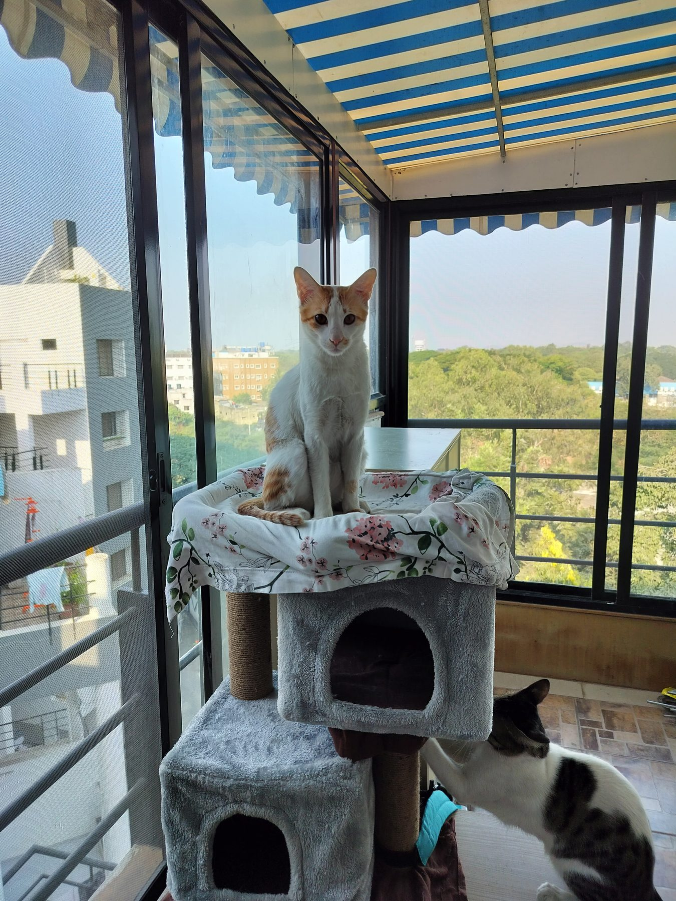

catadoption_pune
catadoption_pune

Short version: net every balcony, edge to edge, and every window that juts out with a grill (the kitchen one, usually). A grill on its own does not count: the net goes over the grill too. Windows with mosquito jaali are already covered. In Pune it is the same net people put up against pigeons, it costs a few thousand rupees fitted, and you do not need the society's permission.
Why an indie will try it
The pigeons. For an indie cat the pull of a pigeon on the next ledge is just too much. They have no fear, and they imagine they can parkour from your window to your neighbour's. It is true, and it has happened. Ask any vet in Pune and they will know of cats that have fallen.
What a fall does
Vets here have a rough rule for it. From the first floor a cat might walk away. From the second to the sixth is the worst: broken bones, chest injuries, bleeding inside (you might see blood from its bottom). Strangely, cats have survived falls from higher than the sixth floor, and a New York study of 132 cats that fell found the same pattern, with fewer deaths above the seventh floor than below it. Don't try it. I do not want to try my luck with mine.
Then the bill. Surgery for one broken leg bone is about ₹50,000, and that is before the blood tests, the stay at the vet, the pain medicines and everything else. The net costs a few thousand. And imagine the guilt of knowing you could have stopped it and did nothing.
Where the net goes
Every balcony, all of it. Every window that sticks out with a grill box, like most kitchen windows, because that box is exactly where a cat ends up. Windows with a mosquito jaali are fine as they are.
Make sure there are no gaps at the edges, top and sides. Indies jump high, and they climb grills the way people do (not joking; search YouTube for it).

A grill is not a net
Most of our windows already have grills, and when we say netting a lot of people hear grill. It is not the same thing. Cats fit through all kinds of grills. You may think the gap is narrow enough. Trust me, it is not. And the ones that cannot fit through climb it, which is why the grilled windows get a net too.
Which net, and who fits it
It is the same net Pune puts up against pigeons, and the same people fit it; most neighbourhoods have someone who can do a flat in a day. We have had various brands over the years and all of them have held up. Ours now is Mr Right's balcony net, and I think it lasts longer than the others. A cat cannot tear it with its own body weight. The listing says fitting is included, so check that it covers your area; if not, any pigeon-net fitter will put it up, or bring his own net, for a few thousand rupees.
Permission, and the landlord
In Pune you generally do not need the society's permission for a net, a tarp over the balcony or anything temporary like that. If you rent, landlords are usually for it, because it keeps pigeon droppings away. Ask them to put it up for you, and say the droppings flying in through the window are unhygienic. They are, and then the net costs you nothing.
No net, no cat
This is the rule all over Pune, and that is just how it is. Get your balcony netted before you even contact any of our rescuers. It is one of the things you do while you are still deciding on a pet, along with working out where the litter box will go and checking that everyone at home is on board. The rest of day one is its own page.
Questions? DM us.
We're @catadoption_pune on Instagram — DMs are how everything here works. If a cat has already fallen, go to a vet now, even if it is walking; a lot of what a fall does is on the inside. The Emergency page has the numbers.